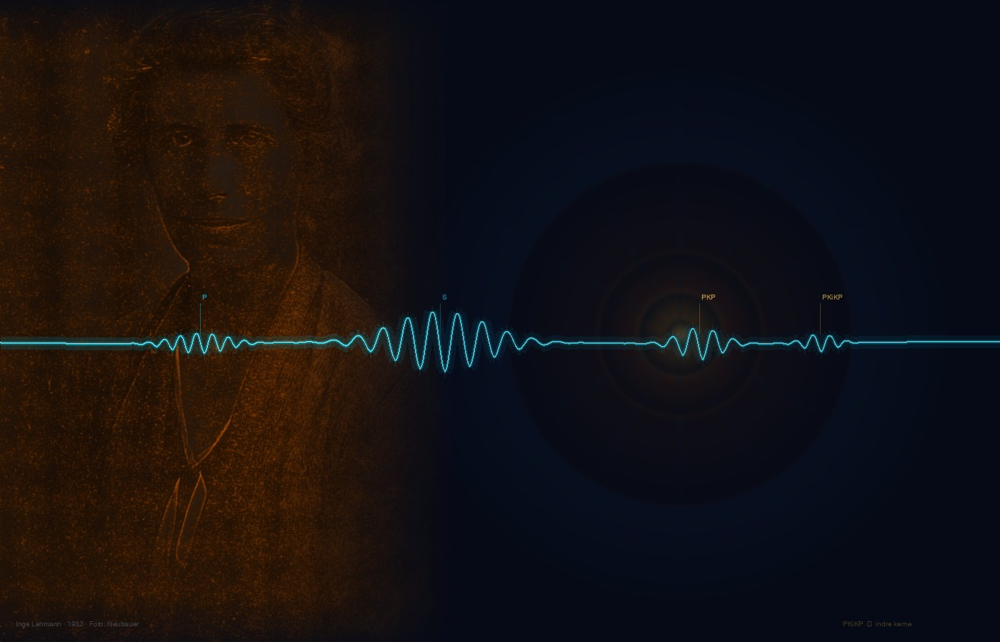

Fra 6. klasse til gymnasiet — elever udforsker Jordens indre, lytter til ægte jordskælv og følger i sporene på en af videnskabshistoriens mest oversete opdagere.
Inge Lehmann har i alt for mange år lidt under manglende anerkendelse for hendes fantastiske bidrag til forståelsen af Jordens indre.
I de seneste år er der kommet biografi og forskellige populærvidenskabelige fremstillinger om hendes liv og færden. Til trods for det er der ikke nogen, der har fundet en måde at arbejde med hendes opdagelser og betydning i naturfagsundervisningen — i hverken grundskole eller ungdomsuddannelse.
Det ønsker vi at rette op på.
Vi har udviklet metoder og teknikker, der gør det muligt for elever helt ned i 6. klasse at arbejde med seismik, jordskælv og udforskning af Jordens indre.
Via GeoSeis kan elever se og høre rigtige jordskælv — ikke kun syntetiske eksempler. Seismiske data bliver til lyd og billeder, der giver adgang til Jordens indre.
Med dette projekt ønsker vi at udvikle, teste og formidle dette arbejde med udgangspunkt i SANS — Følelser, Fantasi, Fortællinger og Fællesskab som veje til faglig forståelse.
Frit tilgængeligt undervisningsmateriale til grundskole og ungdomsuddannelse i hele Danmark.
Projektet søger fondsstøtte til udvikling, afprøvning og evaluering over 2–3 år. Primær ansøgning: Novo Nordisk Fonden.
Philip Kruse Jakobsen er lektor og grundlæggeren af Sans Science — et fagdidaktisk projekt med fokus på at gøre naturvidenskab meningsfuld og menneskelig for elever på alle niveauer.
Projektet er forankret i SANS-modellen og er udviklet i tæt samspil med elever og undervisere. Vi søger samarbejde med fagpersoner, institutioner og fonde, der vil være med til at give Inge Lehmann den plads hun fortjener i dansk naturvidenskabsundervisning.
Jeg er i gang med at samle et netværk af samarbejdspartnere — fagpersoner, institutioner og gymnasier der vil være med til at forme projektet. Er det noget for dig?